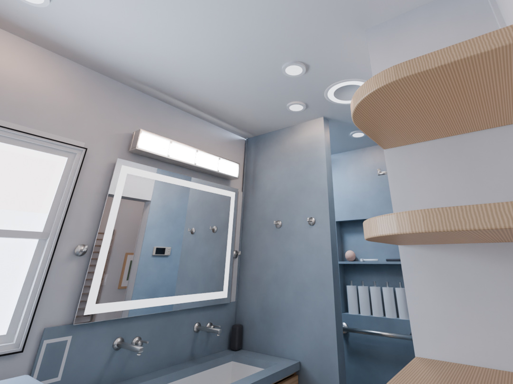

What you see from the doorway.
Both images look toward the shower from the entrance. In the earlier proposal the opaque divider rises to the ceiling. The current design lets you see past the vanity through the glass.


We could compare how far the solid wall rose beside the vanity and how much of the shower remained visible above it. The door width, angled corner and toilet rough-in remained on the list for a field check.
Stand in the doorway